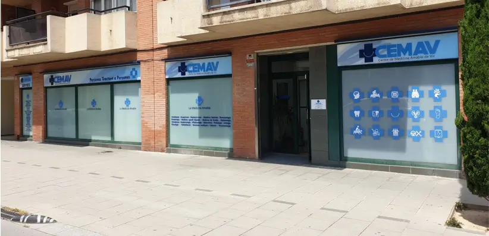

Centre de Mèdic a Vic · Des del 2002
CEMAV va néixer el 2 de maig del 2002 amb el nom "Avicena Espai Natural, S.L", oferint un espai dedicat a la medicina alternativa amb especialitats com homeopatia, acupuntura, fisioterapia i podologia.
Amb l'entrada de nous socis el 2005, vam ampliar la nostra oferta incorporant especialitats mèdiques com traumatologia, urologia, oftalmologia, odontologia, dermatologia i psicologia, entre d'altres. Així, ens vam convertir en el Centre de Medicina Avançada de Vic (CEMAV).
El 2020 vam iniciar una nova etapa mantenint el mateix nom però reinterpretant-lo com a Centre de Medicina Amable de Vic. Actualment, continuem oferint una àmplia gamma de serveis mèdics i terapèutics.

Neixem com "Avicena Espai Natural" amb medicina alternativa i teràpies naturals.
Incorporem especialitats mèdiques i ens convertim en Centre de Medicina Avançada.
Reinterpretem CEMAV com a Centre de Medicina Amable: persones primer.
" Persones tractant a persones "
La filosofia que guia cada visita al nostre centre.